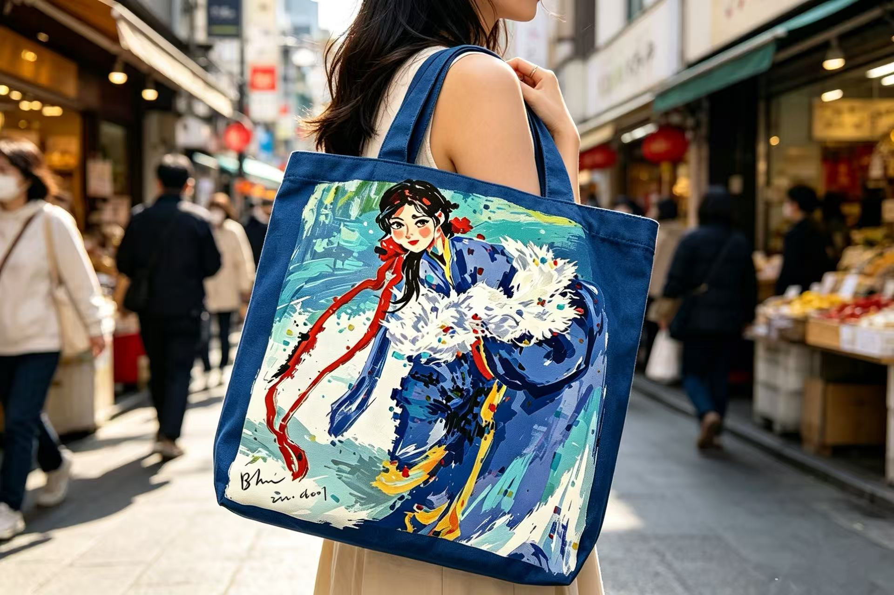
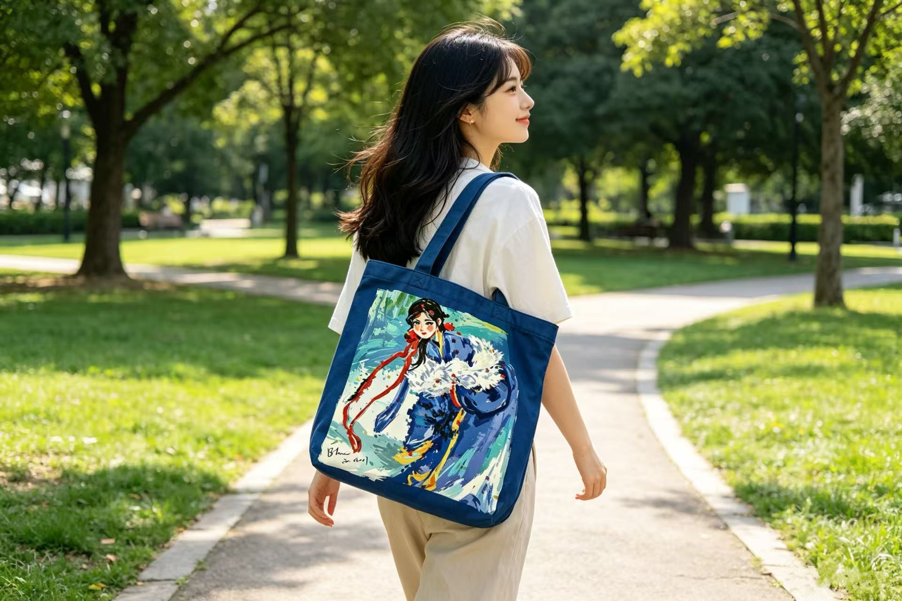
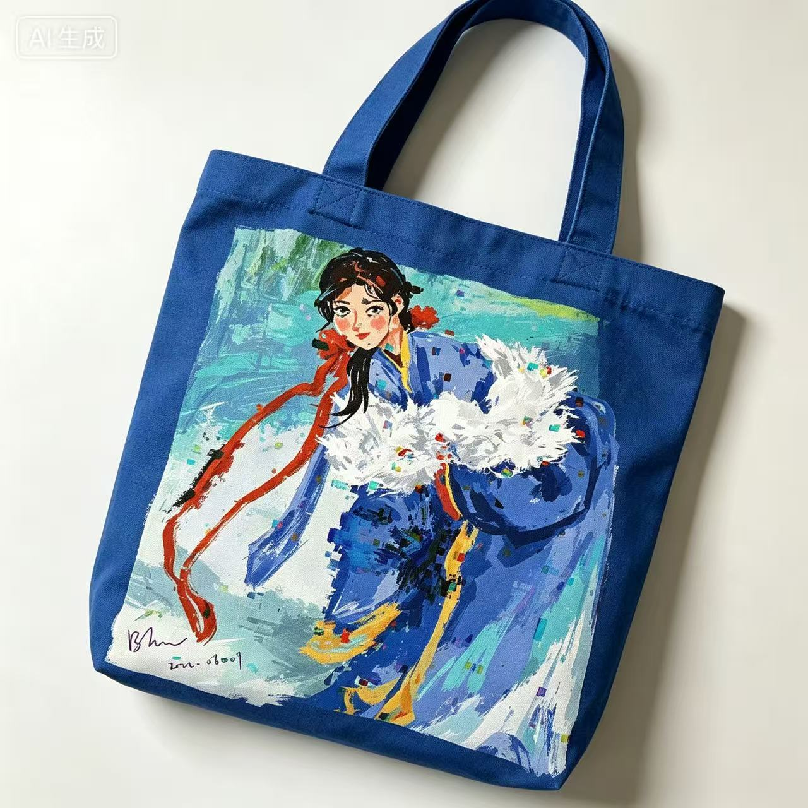
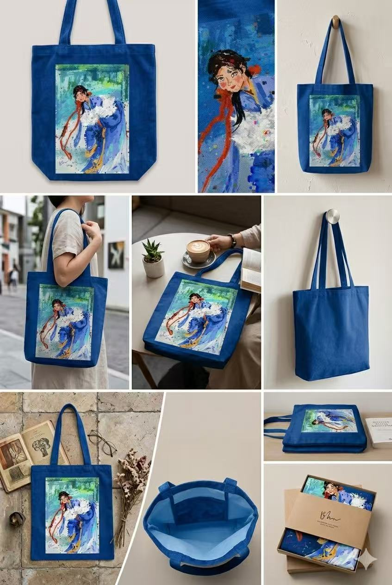
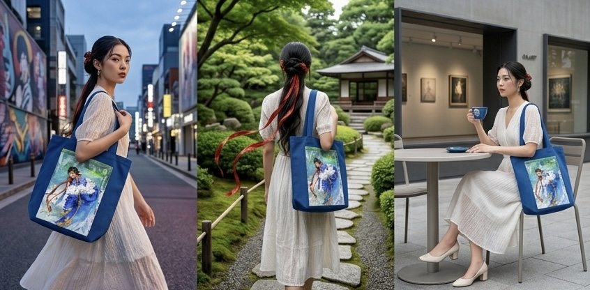
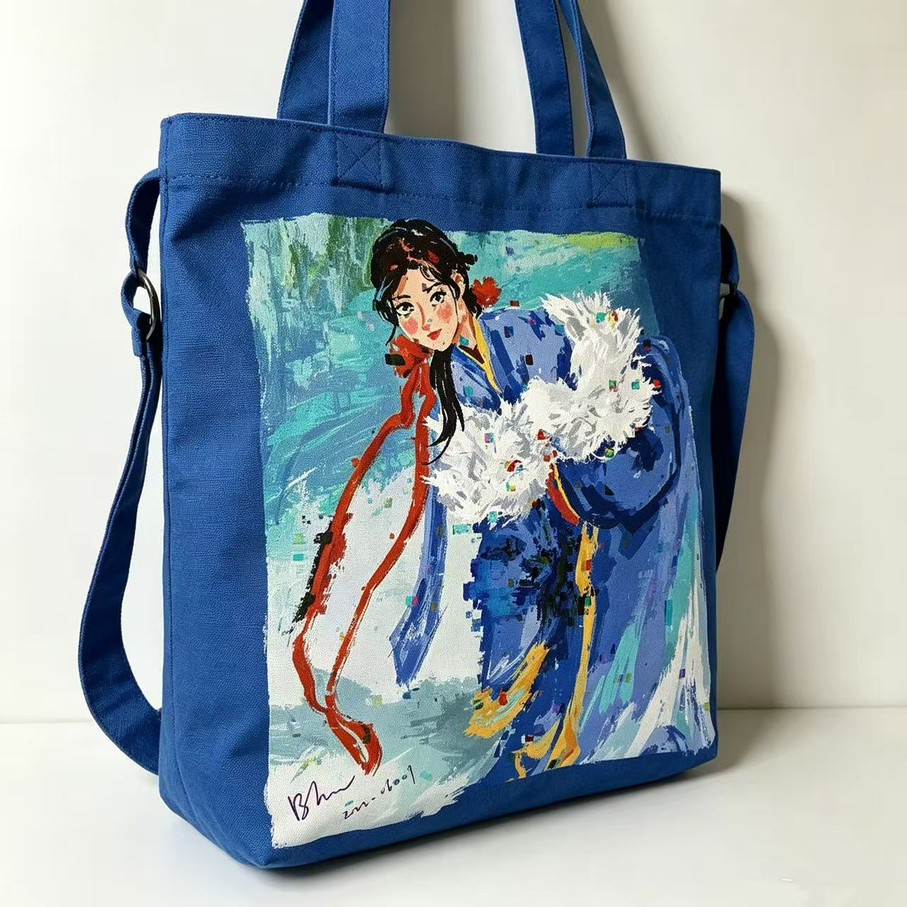
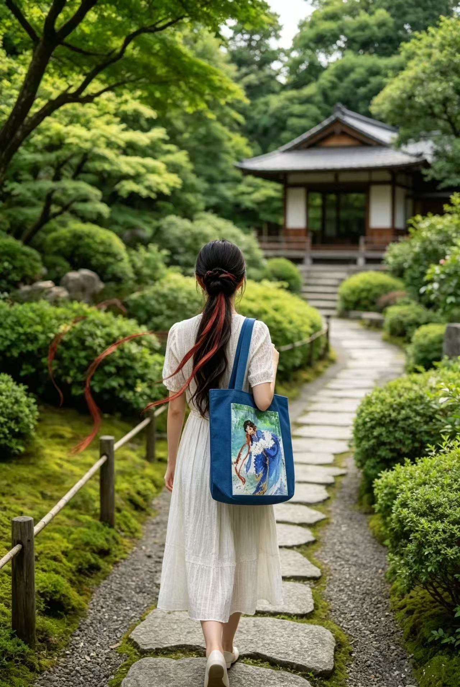
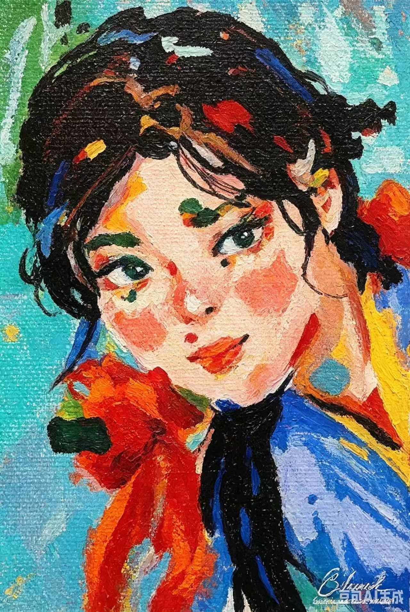
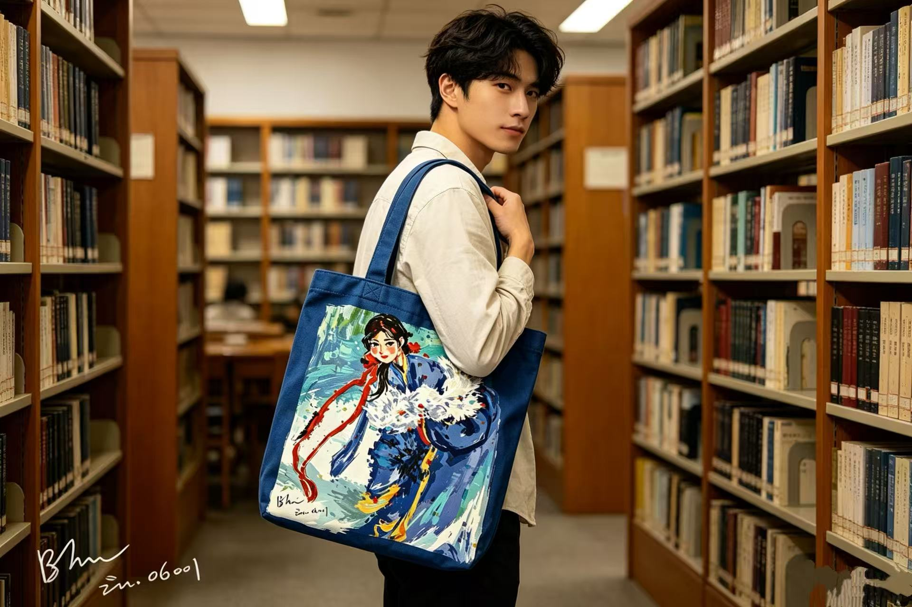

SCENE / STREET
走进日常街区
蓝色包身在城市街景中显得清爽而醒目，适合通勤、散步和一场临时决定的出门。
ART OBJECT / WANDERER TOTE
创作灵感来自“雪中流浪的女子”：她穿过冷风、远路和未知的城市，把柔软藏在衣袖里，也把自由背在肩上。蓝色帆布像冬日天空，白色羽毛与雪光交织，红色飘带则像仍然燃着的方向感。

A BAG FOR THE ROAD
这只帆布袋把百里的绘画变成可日常使用的物件。画面中的女子并不只是旅人，她像每一个正在寻找出口的人：在寒冷里保持明亮，在流浪里保留自己的颜色。
返回衍生艺术品购买
SCENE / STREET
蓝色包身在城市街景中显得清爽而醒目，适合通勤、散步和一场临时决定的出门。

SCENE / PARK
绿荫里的帆布袋让画面从雪地走向夏日，像把内心的清凉和自由背在身后。

DETAIL / PRINT
人物的眼神、衣褶、羽毛和色块保留了绘画笔触，让包面既是图案，也是可以靠近观看的作品。

OBJECT / MULTI VIEW
从悬挂、手提到桌面摆放，展示帆布袋在不同生活场景中的比例、容量和质感。

LIFESTYLE / DAILY
它可以进入街道、花园和安静角落，成为一件低调但有故事感的随身物。

FORM / STRUCTURE
挺括的蓝色包身承托插画区域，适合放入书、本子、薄外套和日常随身小物。

SCENE / GARDEN
背影、石径和垂落的红色发带，让“流浪”的主题从画面延伸到身体的行走。

ARTWORK / INSPIRATION
创作的核心是一个在雪中仍然发光的女性形象：柔软、倔强，也带着继续上路的勇气。

SCENE / LIBRARY
在书架之间，帆布袋像一个移动的小展览，也像给日常阅读留出的安静空间。